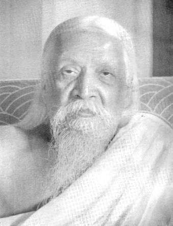

Guest Editorial
SRI AUROBINDO

SRI AUROBINDO 1950
Here comes Sri Aurobindo, the completest
synthesis that has been realized of the genius of Asia and the genius of
Europe. The last of the great Rishis holds in his hand, in firm unrelated grip,
the bow of creative energy.
–ROMAIN ROLLAND
As
this special number of Triveni goes
to press news of Sri Auabindo’s birth centenary celebrations are pouring in from
all over
An
Indian savant observed in
Every
nation has a role to play in the process of the unfoldment of the world’s
destiny. Sri Aurobindo has determined the genius of
But
Sri Aurobindo’s vision embraced the destiny of man as a whole.
Hundred
years have passed since the birth of Sri Aurobindo. In the life of Time never
had a century been more significant, more eventful.
A
representative voice of the modern intellect, Bertrand Russell, says with
agony:
“It
is difficult to believe that Omnipotence needed so vast a setting for so small
and transitory a result. Apart from the minuteness and brevity of the human
species. I cannot feel that it is a worthy climax to such an enormous prelude.”
Where
intellect stops with this significant groping there comes the sure vision of the
Seer. Man is a transitional being, not final. He must transcend himself and
emerge into a new being. This is the demand of the law of evolution–imperative
and absolute. If he does not respond to the demand, it is doubtful if he will
survive the conditions he has created for himself. How can he survive the
innumerable instruments of death he has manufactured unless he goes to a height
from where he can laugh at them–can pity the energy and attention he buried in
them?
But
can be the master of a greater consciousness.
When
superman is born as Nature’s king
His
presence shall transfigure Matter’s world:
He
shall light up Truth’s fire in Nature’s night,
He
shall lay upon earth Truth’s greater law.
For
today Sri Aurobindo is the symbol of hope. For tomorrow, he is the assurance of
victory. The epitome of man’s age-old aspiration for a nobler destiny, his
advent is the justification of love’s protest against death, truth’s revolt
against falsehood.
25th Year
of
While
celebrating this year the 25th anniversary of
Sri Aurobindo
Ashram
–MANOJ DAS